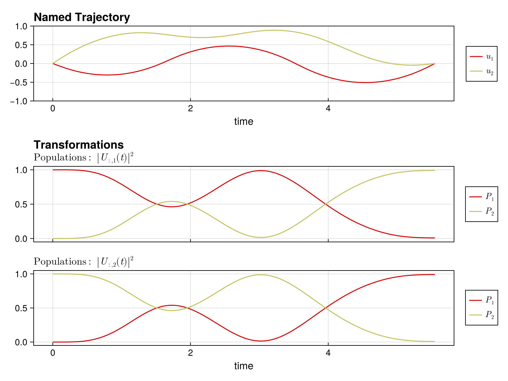

Quickstart Guide
This guide shows you how to set up and solve a quantum optimal control problem in Piccolo.jl. We'll synthesize a single-qubit X gate.
The Problem
We want to find control pulses that implement an X gate on a single qubit with system Hamiltonian:
\[H(t) = \frac{\omega}{2} \sigma_z + u_1(t) \sigma_x + u_2(t) \sigma_y\]
using PiccoloStep 1: Define the Quantum System
First, we define our quantum system by specifying the drift Hamiltonian (always-on), the drive Hamiltonians (controllable), and the bounds on control amplitudes.
# Drift Hamiltonian: qubit frequency term
H_drift = 0.5 * PAULIS[:Z]
# Drive Hamiltonians: X and Y controls
H_drives = [PAULIS[:X], PAULIS[:Y]]
# Maximum control amplitudes
drive_bounds = [1.0, 1.0]
# Create the quantum system
sys = QuantumSystem(H_drift, H_drives, drive_bounds)QuantumSystem: levels = 2, n_drives = 2Step 2: Create an Initial Pulse
We need an initial guess for the control pulse. ZeroOrderPulse represents piecewise constant controls.
# Time parameters
T = 10.0 # Total gate duration
N = 100 # Number of timesteps
# Create time vector
times = collect(range(0, T, length = N))
# Random initial controls (scaled by drive bounds)
initial_controls = 0.1 * randn(2, N)
# Create the pulse
pulse = ZeroOrderPulse(initial_controls, times)ZeroOrderPulse{DataInterpolations.ConstantInterpolation{Matrix{Float64}, Vector{Float64}, Vector{Union{}}, Float64}}(DataInterpolations.ConstantInterpolation{Matrix{Float64}, Vector{Float64}, Vector{Union{}}, Float64}([0.13505168807180154 -0.00017043774368383387 … 0.09191160969671607 0.10021322643579433; -0.15031490034069994 -0.06483022711387205 … 0.09472578354906547 0.06863589822838588], [0.0, 0.10101010101010101, 0.20202020202020202, 0.30303030303030304, 0.40404040404040403, 0.5050505050505051, 0.6060606060606061, 0.7070707070707071, 0.8080808080808081, 0.9090909090909091 … 9.090909090909092, 9.191919191919192, 9.292929292929292, 9.393939393939394, 9.494949494949495, 9.595959595959595, 9.696969696969697, 9.797979797979798, 9.8989898989899, 10.0], Union{}[], nothing, :left, DataInterpolations.ExtrapolationType.None, DataInterpolations.ExtrapolationType.None, FindFirstFunctions.Guesser{Vector{Float64}}([0.0, 0.10101010101010101, 0.20202020202020202, 0.30303030303030304, 0.40404040404040403, 0.5050505050505051, 0.6060606060606061, 0.7070707070707071, 0.8080808080808081, 0.9090909090909091 … 9.090909090909092, 9.191919191919192, 9.292929292929292, 9.393939393939394, 9.494949494949495, 9.595959595959595, 9.696969696969697, 9.797979797979798, 9.8989898989899, 10.0], Base.RefValue{Int64}(1), true), false, true), 10.0, 2, :u, [0.0, 0.0], [0.0, 0.0])Step 3: Define the Goal via a Trajectory
A UnitaryTrajectory combines the system, pulse, and target gate.
# Target: X gate
U_goal = GATES[:X]
# Create the trajectory
qtraj = UnitaryTrajectory(sys, pulse, U_goal)UnitaryTrajectory{ZeroOrderPulse{DataInterpolations.ConstantInterpolation{Matrix{Float64}, Vector{Float64}, Vector{Union{}}, Float64}}, SciMLBase.ODESolution{ComplexF64, 3, Vector{Matrix{ComplexF64}}, Nothing, Nothing, Vector{Float64}, Vector{Vector{Matrix{ComplexF64}}}, Nothing, SciMLBase.ODEProblem{Matrix{ComplexF64}, Tuple{Float64, Float64}, true, SciMLBase.NullParameters, SciMLBase.ODEFunction{true, SciMLBase.FullSpecialize, SciMLOperators.MatrixOperator{ComplexF64, Matrix{ComplexF64}, SciMLOperators.FilterKwargs{Nothing, Val{()}}, SciMLOperators.FilterKwargs{Piccolo.Quantum.Rollouts.var"#update!#_construct_operator##2"{QuantumSystem{Piccolo.Quantum.QuantumSystems.var"#32#33"{SparseArrays.SparseMatrixCSC{ComplexF64, Int64}, Vector{SparseArrays.SparseMatrixCSC{ComplexF64, Int64}}, Int64}, Piccolo.Quantum.QuantumSystems.var"#34#35"{Vector{SparseArrays.SparseMatrixCSC{Float64, Int64}}, Int64, SparseArrays.SparseMatrixCSC{Float64, Int64}}, @NamedTuple{}}}, Val{()}}}, LinearAlgebra.UniformScaling{Bool}, Nothing, Nothing, Nothing, Nothing, Nothing, Nothing, Nothing, Nothing, Nothing, Nothing, Nothing, Nothing, typeof(SciMLBase.DEFAULT_OBSERVED), Nothing, Piccolo.Quantum.Rollouts.PiccoloRolloutSystem{Union{Int64, AbstractVector{Int64}, CartesianIndex, CartesianIndices}}, Nothing, Nothing}, Base.Pairs{Symbol, Vector{Float64}, Nothing, @NamedTuple{tstops::Vector{Float64}, saveat::Vector{Float64}}}, SciMLBase.StandardODEProblem}, OrdinaryDiffEqLinear.MagnusGL4, OrdinaryDiffEqCore.InterpolationData{SciMLBase.ODEFunction{true, SciMLBase.FullSpecialize, SciMLOperators.MatrixOperator{ComplexF64, Matrix{ComplexF64}, SciMLOperators.FilterKwargs{Nothing, Val{()}}, SciMLOperators.FilterKwargs{Piccolo.Quantum.Rollouts.var"#update!#_construct_operator##2"{QuantumSystem{Piccolo.Quantum.QuantumSystems.var"#32#33"{SparseArrays.SparseMatrixCSC{ComplexF64, Int64}, Vector{SparseArrays.SparseMatrixCSC{ComplexF64, Int64}}, Int64}, Piccolo.Quantum.QuantumSystems.var"#34#35"{Vector{SparseArrays.SparseMatrixCSC{Float64, Int64}}, Int64, SparseArrays.SparseMatrixCSC{Float64, Int64}}, @NamedTuple{}}}, Val{()}}}, LinearAlgebra.UniformScaling{Bool}, Nothing, Nothing, Nothing, Nothing, Nothing, Nothing, Nothing, Nothing, Nothing, Nothing, Nothing, Nothing, typeof(SciMLBase.DEFAULT_OBSERVED), Nothing, Piccolo.Quantum.Rollouts.PiccoloRolloutSystem{Union{Int64, AbstractVector{Int64}, CartesianIndex, CartesianIndices}}, Nothing, Nothing}, Vector{Matrix{ComplexF64}}, Vector{Float64}, Vector{Vector{Matrix{ComplexF64}}}, Nothing, OrdinaryDiffEqLinear.MagnusGL4Cache{Matrix{ComplexF64}, Matrix{ComplexF64}, Matrix{ComplexF64}, Nothing}, Nothing}, SciMLBase.DEStats, Nothing, Nothing, Nothing, Nothing}, Matrix{ComplexF64}}(QuantumSystem: levels = 2, n_drives = 2, ZeroOrderPulse{DataInterpolations.ConstantInterpolation{Matrix{Float64}, Vector{Float64}, Vector{Union{}}, Float64}}(DataInterpolations.ConstantInterpolation{Matrix{Float64}, Vector{Float64}, Vector{Union{}}, Float64}([0.13505168807180154 -0.00017043774368383387 … 0.09191160969671607 0.10021322643579433; -0.15031490034069994 -0.06483022711387205 … 0.09472578354906547 0.06863589822838588], [0.0, 0.10101010101010101, 0.20202020202020202, 0.30303030303030304, 0.40404040404040403, 0.5050505050505051, 0.6060606060606061, 0.7070707070707071, 0.8080808080808081, 0.9090909090909091 … 9.090909090909092, 9.191919191919192, 9.292929292929292, 9.393939393939394, 9.494949494949495, 9.595959595959595, 9.696969696969697, 9.797979797979798, 9.8989898989899, 10.0], Union{}[], nothing, :left, DataInterpolations.ExtrapolationType.None, DataInterpolations.ExtrapolationType.None, FindFirstFunctions.Guesser{Vector{Float64}}([0.0, 0.10101010101010101, 0.20202020202020202, 0.30303030303030304, 0.40404040404040403, 0.5050505050505051, 0.6060606060606061, 0.7070707070707071, 0.8080808080808081, 0.9090909090909091 … 9.090909090909092, 9.191919191919192, 9.292929292929292, 9.393939393939394, 9.494949494949495, 9.595959595959595, 9.696969696969697, 9.797979797979798, 9.8989898989899, 10.0], Base.RefValue{Int64}(100), true), false, true), 10.0, 2, :u, [0.0, 0.0], [0.0, 0.0]), ComplexF64[1.0 + 0.0im 0.0 + 0.0im; 0.0 + 0.0im 1.0 + 0.0im], ComplexF64[0.0 + 0.0im 1.0 + 0.0im; 1.0 + 0.0im 0.0 + 0.0im], SciMLBase.ODESolution{ComplexF64, 3, Vector{Matrix{ComplexF64}}, Nothing, Nothing, Vector{Float64}, Vector{Vector{Matrix{ComplexF64}}}, Nothing, SciMLBase.ODEProblem{Matrix{ComplexF64}, Tuple{Float64, Float64}, true, SciMLBase.NullParameters, SciMLBase.ODEFunction{true, SciMLBase.FullSpecialize, SciMLOperators.MatrixOperator{ComplexF64, Matrix{ComplexF64}, SciMLOperators.FilterKwargs{Nothing, Val{()}}, SciMLOperators.FilterKwargs{Piccolo.Quantum.Rollouts.var"#update!#_construct_operator##2"{QuantumSystem{Piccolo.Quantum.QuantumSystems.var"#32#33"{SparseArrays.SparseMatrixCSC{ComplexF64, Int64}, Vector{SparseArrays.SparseMatrixCSC{ComplexF64, Int64}}, Int64}, Piccolo.Quantum.QuantumSystems.var"#34#35"{Vector{SparseArrays.SparseMatrixCSC{Float64, Int64}}, Int64, SparseArrays.SparseMatrixCSC{Float64, Int64}}, @NamedTuple{}}}, Val{()}}}, LinearAlgebra.UniformScaling{Bool}, Nothing, Nothing, Nothing, Nothing, Nothing, Nothing, Nothing, Nothing, Nothing, Nothing, Nothing, Nothing, typeof(SciMLBase.DEFAULT_OBSERVED), Nothing, Piccolo.Quantum.Rollouts.PiccoloRolloutSystem{Union{Int64, AbstractVector{Int64}, CartesianIndex, CartesianIndices}}, Nothing, Nothing}, Base.Pairs{Symbol, Vector{Float64}, Nothing, @NamedTuple{tstops::Vector{Float64}, saveat::Vector{Float64}}}, SciMLBase.StandardODEProblem}, OrdinaryDiffEqLinear.MagnusGL4, OrdinaryDiffEqCore.InterpolationData{SciMLBase.ODEFunction{true, SciMLBase.FullSpecialize, SciMLOperators.MatrixOperator{ComplexF64, Matrix{ComplexF64}, SciMLOperators.FilterKwargs{Nothing, Val{()}}, SciMLOperators.FilterKwargs{Piccolo.Quantum.Rollouts.var"#update!#_construct_operator##2"{QuantumSystem{Piccolo.Quantum.QuantumSystems.var"#32#33"{SparseArrays.SparseMatrixCSC{ComplexF64, Int64}, Vector{SparseArrays.SparseMatrixCSC{ComplexF64, Int64}}, Int64}, Piccolo.Quantum.QuantumSystems.var"#34#35"{Vector{SparseArrays.SparseMatrixCSC{Float64, Int64}}, Int64, SparseArrays.SparseMatrixCSC{Float64, Int64}}, @NamedTuple{}}}, Val{()}}}, LinearAlgebra.UniformScaling{Bool}, Nothing, Nothing, Nothing, Nothing, Nothing, Nothing, Nothing, Nothing, Nothing, Nothing, Nothing, Nothing, typeof(SciMLBase.DEFAULT_OBSERVED), Nothing, Piccolo.Quantum.Rollouts.PiccoloRolloutSystem{Union{Int64, AbstractVector{Int64}, CartesianIndex, CartesianIndices}}, Nothing, Nothing}, Vector{Matrix{ComplexF64}}, Vector{Float64}, Vector{Vector{Matrix{ComplexF64}}}, Nothing, OrdinaryDiffEqLinear.MagnusGL4Cache{Matrix{ComplexF64}, Matrix{ComplexF64}, Matrix{ComplexF64}, Nothing}, Nothing}, SciMLBase.DEStats, Nothing, Nothing, Nothing, Nothing}(Matrix{ComplexF64}[[1.0 + 0.0im 0.0 + 0.0im; 0.0 + 0.0im 1.0 + 0.0im], [0.9985461847611782 - 0.049975767396785546im 0.015024204991395644 - 0.01349862349923918im; -0.015024204991395645 - 0.013498623499239183im 0.9985461847611781 + 0.049975767396785546im], [0.9946824256079354 - 0.09990615081758691im 0.02080047163333557 - 0.01389149363309681im; -0.020800471633335572 - 0.013891493633096812im 0.9946824256079354 + 0.09990615081758689im], [0.9886139127142654 - 0.14973731177000837im 0.014865264833385006 - 0.0005412514345258124im; -0.01486526483338501 - 0.0005412514345258176im 0.9886139127142655 + 0.14973731177000837im], [0.9797751134122669 - 0.19869138440404469im 0.015629374446252925 - 0.017837700412384715im; -0.015629374446252925 - 0.017837700412384715im 0.979775113412267 + 0.19869138440404469im], [0.9683335119283283 - 0.2475216348493473im 0.025516143088957614 - 0.020302127965305648im; -0.02551614308895761 - 0.02030212796530565im 0.9683335119283285 + 0.24752163484934733im], [0.9543734665921476 - 0.2956631983562881im 0.03449880222074041 - 0.02375693683854157im; -0.03449880222074039 - 0.023756936838541565im 0.9543734665921476 + 0.2956631983562881im], [0.9384012368571145 - 0.3430067197946291im 0.03342549740748096 - 0.025144481776879894im; -0.03342549740748094 - 0.02514448177687989im 0.9384012368571145 + 0.3430067197946291im], [0.919875902345324 - 0.3889855546370359im 0.032197869425289086 - 0.0384949317776249im; -0.03219786942528907 - 0.0384949317776249im 0.9198759023453241 + 0.38898555463703594im], [0.8993583833520621 - 0.4352126428970128im 0.033993604414190914 - 0.024267027339429523im; -0.0339936044141909 - 0.024267027339429516im 0.8993583833520621 + 0.4352126428970128im] … [-0.16002249578379946 + 0.9870243543027788im -0.01112413869224902 - 0.007209604334668045im; 0.011124138692249097 - 0.007209604334668216im -0.16002249578379887 - 0.9870243543027771im], [-0.11048608819627129 + 0.9935603800926388im -0.022508844878972194 - 0.011133163408122766im; 0.022508844878972298 - 0.011133163408122933im -0.11048608819627076 - 0.9935603800926367im], [-0.06077494211176864 + 0.9976755945526053im -0.029562961706623318 - 0.008708946006859748im; 0.029562961706623442 - 0.008708946006859904im -0.060774942111768225 - 0.9976755945526031im], [-0.011138886245116593 + 0.9996565362233335im -0.023286456922657565 + 0.0045250108481453555im; 0.023286456922657687 + 0.004525010848145226im -0.011138886245116294 - 0.9996565362233313im], [0.038776688477899536 + 0.9990822583756926im -0.01679676080251913 + 0.006991298603091467im; 0.016796760802519243 + 0.006991298603091346im 0.03877668847789972 - 0.9990822583756905im], [0.08864598591681067 + 0.9960566735894901im -0.001999920721619511 + 0.00299874903655616im; 0.001999920721619603 + 0.0029987490365560327im 0.08864598591681076 - 0.9960566735894881im], [0.13828175351693983 + 0.9903453045262228im 0.00960102454360113 + 0.0014679151395538203im; -0.009601024543601058 + 0.0014679151395536915im 0.13828175351693983 - 0.9903453045262208im], [0.18740237005454072 + 0.9820776211316817im 0.008769353167342281 - 0.0180830366726594im; -0.008769353167342196 - 0.018083036672659564im 0.1874023700545406 - 0.9820776211316797im], [0.23621766150946027 + 0.9716885152811074im -0.0032170137533628993 - 0.0035066343279605127im; 0.003217013753363007 - 0.003506634327960643im 0.2362176615094601 - 0.9716885152811056im], [0.28440198341707973 + 0.9585875840876371im -0.014551525512050889 + 0.003688979090596058im; 0.014551525512051019 + 0.0036889790905959533im 0.28440198341707945 - 0.9585875840876352im]], nothing, nothing, [0.0, 0.1, 0.2, 0.3, 0.4, 0.5, 0.6, 0.7, 0.8, 0.9 … 9.1, 9.2, 9.3, 9.4, 9.5, 9.6, 9.7, 9.8, 9.9, 10.0], Vector{Matrix{ComplexF64}}[[[1.0 + 0.0im 0.0 + 0.0im; 0.0 + 0.0im 1.0 + 0.0im]]], nothing, SciMLBase.ODEProblem{Matrix{ComplexF64}, Tuple{Float64, Float64}, true, SciMLBase.NullParameters, SciMLBase.ODEFunction{true, SciMLBase.FullSpecialize, SciMLOperators.MatrixOperator{ComplexF64, Matrix{ComplexF64}, SciMLOperators.FilterKwargs{Nothing, Val{()}}, SciMLOperators.FilterKwargs{Piccolo.Quantum.Rollouts.var"#update!#_construct_operator##2"{QuantumSystem{Piccolo.Quantum.QuantumSystems.var"#32#33"{SparseArrays.SparseMatrixCSC{ComplexF64, Int64}, Vector{SparseArrays.SparseMatrixCSC{ComplexF64, Int64}}, Int64}, Piccolo.Quantum.QuantumSystems.var"#34#35"{Vector{SparseArrays.SparseMatrixCSC{Float64, Int64}}, Int64, SparseArrays.SparseMatrixCSC{Float64, Int64}}, @NamedTuple{}}}, Val{()}}}, LinearAlgebra.UniformScaling{Bool}, Nothing, Nothing, Nothing, Nothing, Nothing, Nothing, Nothing, Nothing, Nothing, Nothing, Nothing, Nothing, typeof(SciMLBase.DEFAULT_OBSERVED), Nothing, Piccolo.Quantum.Rollouts.PiccoloRolloutSystem{Union{Int64, AbstractVector{Int64}, CartesianIndex, CartesianIndices}}, Nothing, Nothing}, Base.Pairs{Symbol, Vector{Float64}, Nothing, @NamedTuple{tstops::Vector{Float64}, saveat::Vector{Float64}}}, SciMLBase.StandardODEProblem}(SciMLBase.ODEFunction{true, SciMLBase.FullSpecialize, SciMLOperators.MatrixOperator{ComplexF64, Matrix{ComplexF64}, SciMLOperators.FilterKwargs{Nothing, Val{()}}, SciMLOperators.FilterKwargs{Piccolo.Quantum.Rollouts.var"#update!#_construct_operator##2"{QuantumSystem{Piccolo.Quantum.QuantumSystems.var"#32#33"{SparseArrays.SparseMatrixCSC{ComplexF64, Int64}, Vector{SparseArrays.SparseMatrixCSC{ComplexF64, Int64}}, Int64}, Piccolo.Quantum.QuantumSystems.var"#34#35"{Vector{SparseArrays.SparseMatrixCSC{Float64, Int64}}, Int64, SparseArrays.SparseMatrixCSC{Float64, Int64}}, @NamedTuple{}}}, Val{()}}}, LinearAlgebra.UniformScaling{Bool}, Nothing, Nothing, Nothing, Nothing, Nothing, Nothing, Nothing, Nothing, Nothing, Nothing, Nothing, Nothing, typeof(SciMLBase.DEFAULT_OBSERVED), Nothing, Piccolo.Quantum.Rollouts.PiccoloRolloutSystem{Union{Int64, AbstractVector{Int64}, CartesianIndex, CartesianIndices}}, Nothing, Nothing}(MatrixOperator(2 × 2), LinearAlgebra.UniformScaling{Bool}(true), nothing, nothing, nothing, nothing, nothing, nothing, nothing, nothing, nothing, nothing, nothing, nothing, SciMLBase.DEFAULT_OBSERVED, nothing, Piccolo.Quantum.Rollouts.PiccoloRolloutSystem{Union{Int64, AbstractVector{Int64}, CartesianIndex, CartesianIndices}}(Dict{Symbol, Union{Int64, AbstractVector{Int64}, CartesianIndex, CartesianIndices}}(:U => CartesianIndices((2, 2)), :U_2_2 => CartesianIndex(2, 2), :U_1_1 => CartesianIndex(1, 1), :U_2_1 => CartesianIndex(2, 1), :U_1_2 => CartesianIndex(1, 2)), :t, Dict{Symbol, Float64}()), nothing, nothing), ComplexF64[1.0 + 0.0im 0.0 + 0.0im; 0.0 + 0.0im 1.0 + 0.0im], (0.0, 10.0), SciMLBase.NullParameters(), Base.Pairs(:tstops => [0.0, 0.1, 0.2, 0.3, 0.4, 0.5, 0.6, 0.7, 0.8, 0.9 … 9.1, 9.2, 9.3, 9.4, 9.5, 9.6, 9.7, 9.8, 9.9, 10.0], :saveat => [0.0, 0.1, 0.2, 0.3, 0.4, 0.5, 0.6, 0.7, 0.8, 0.9 … 9.1, 9.2, 9.3, 9.4, 9.5, 9.6, 9.7, 9.8, 9.9, 10.0]), SciMLBase.StandardODEProblem()), OrdinaryDiffEqLinear.MagnusGL4(false, 30, 0), OrdinaryDiffEqCore.InterpolationData{SciMLBase.ODEFunction{true, SciMLBase.FullSpecialize, SciMLOperators.MatrixOperator{ComplexF64, Matrix{ComplexF64}, SciMLOperators.FilterKwargs{Nothing, Val{()}}, SciMLOperators.FilterKwargs{Piccolo.Quantum.Rollouts.var"#update!#_construct_operator##2"{QuantumSystem{Piccolo.Quantum.QuantumSystems.var"#32#33"{SparseArrays.SparseMatrixCSC{ComplexF64, Int64}, Vector{SparseArrays.SparseMatrixCSC{ComplexF64, Int64}}, Int64}, Piccolo.Quantum.QuantumSystems.var"#34#35"{Vector{SparseArrays.SparseMatrixCSC{Float64, Int64}}, Int64, SparseArrays.SparseMatrixCSC{Float64, Int64}}, @NamedTuple{}}}, Val{()}}}, LinearAlgebra.UniformScaling{Bool}, Nothing, Nothing, Nothing, Nothing, Nothing, Nothing, Nothing, Nothing, Nothing, Nothing, Nothing, Nothing, typeof(SciMLBase.DEFAULT_OBSERVED), Nothing, Piccolo.Quantum.Rollouts.PiccoloRolloutSystem{Union{Int64, AbstractVector{Int64}, CartesianIndex, CartesianIndices}}, Nothing, Nothing}, Vector{Matrix{ComplexF64}}, Vector{Float64}, Vector{Vector{Matrix{ComplexF64}}}, Nothing, OrdinaryDiffEqLinear.MagnusGL4Cache{Matrix{ComplexF64}, Matrix{ComplexF64}, Matrix{ComplexF64}, Nothing}, Nothing}(SciMLBase.ODEFunction{true, SciMLBase.FullSpecialize, SciMLOperators.MatrixOperator{ComplexF64, Matrix{ComplexF64}, SciMLOperators.FilterKwargs{Nothing, Val{()}}, SciMLOperators.FilterKwargs{Piccolo.Quantum.Rollouts.var"#update!#_construct_operator##2"{QuantumSystem{Piccolo.Quantum.QuantumSystems.var"#32#33"{SparseArrays.SparseMatrixCSC{ComplexF64, Int64}, Vector{SparseArrays.SparseMatrixCSC{ComplexF64, Int64}}, Int64}, Piccolo.Quantum.QuantumSystems.var"#34#35"{Vector{SparseArrays.SparseMatrixCSC{Float64, Int64}}, Int64, SparseArrays.SparseMatrixCSC{Float64, Int64}}, @NamedTuple{}}}, Val{()}}}, LinearAlgebra.UniformScaling{Bool}, Nothing, Nothing, Nothing, Nothing, Nothing, Nothing, Nothing, Nothing, Nothing, Nothing, Nothing, Nothing, typeof(SciMLBase.DEFAULT_OBSERVED), Nothing, Piccolo.Quantum.Rollouts.PiccoloRolloutSystem{Union{Int64, AbstractVector{Int64}, CartesianIndex, CartesianIndices}}, Nothing, Nothing}(MatrixOperator(2 × 2), LinearAlgebra.UniformScaling{Bool}(true), nothing, nothing, nothing, nothing, nothing, nothing, nothing, nothing, nothing, nothing, nothing, nothing, SciMLBase.DEFAULT_OBSERVED, nothing, Piccolo.Quantum.Rollouts.PiccoloRolloutSystem{Union{Int64, AbstractVector{Int64}, CartesianIndex, CartesianIndices}}(Dict{Symbol, Union{Int64, AbstractVector{Int64}, CartesianIndex, CartesianIndices}}(:U => CartesianIndices((2, 2)), :U_2_2 => CartesianIndex(2, 2), :U_1_1 => CartesianIndex(1, 1), :U_2_1 => CartesianIndex(2, 1), :U_1_2 => CartesianIndex(1, 2)), :t, Dict{Symbol, Float64}()), nothing, nothing), Matrix{ComplexF64}[[1.0 + 0.0im 0.0 + 0.0im; 0.0 + 0.0im 1.0 + 0.0im], [0.9985461847611782 - 0.049975767396785546im 0.015024204991395644 - 0.01349862349923918im; -0.015024204991395645 - 0.013498623499239183im 0.9985461847611781 + 0.049975767396785546im], [0.9946824256079354 - 0.09990615081758691im 0.02080047163333557 - 0.01389149363309681im; -0.020800471633335572 - 0.013891493633096812im 0.9946824256079354 + 0.09990615081758689im], [0.9886139127142654 - 0.14973731177000837im 0.014865264833385006 - 0.0005412514345258124im; -0.01486526483338501 - 0.0005412514345258176im 0.9886139127142655 + 0.14973731177000837im], [0.9797751134122669 - 0.19869138440404469im 0.015629374446252925 - 0.017837700412384715im; -0.015629374446252925 - 0.017837700412384715im 0.979775113412267 + 0.19869138440404469im], [0.9683335119283283 - 0.2475216348493473im 0.025516143088957614 - 0.020302127965305648im; -0.02551614308895761 - 0.02030212796530565im 0.9683335119283285 + 0.24752163484934733im], [0.9543734665921476 - 0.2956631983562881im 0.03449880222074041 - 0.02375693683854157im; -0.03449880222074039 - 0.023756936838541565im 0.9543734665921476 + 0.2956631983562881im], [0.9384012368571145 - 0.3430067197946291im 0.03342549740748096 - 0.025144481776879894im; -0.03342549740748094 - 0.02514448177687989im 0.9384012368571145 + 0.3430067197946291im], [0.919875902345324 - 0.3889855546370359im 0.032197869425289086 - 0.0384949317776249im; -0.03219786942528907 - 0.0384949317776249im 0.9198759023453241 + 0.38898555463703594im], [0.8993583833520621 - 0.4352126428970128im 0.033993604414190914 - 0.024267027339429523im; -0.0339936044141909 - 0.024267027339429516im 0.8993583833520621 + 0.4352126428970128im] … [-0.16002249578379946 + 0.9870243543027788im -0.01112413869224902 - 0.007209604334668045im; 0.011124138692249097 - 0.007209604334668216im -0.16002249578379887 - 0.9870243543027771im], [-0.11048608819627129 + 0.9935603800926388im -0.022508844878972194 - 0.011133163408122766im; 0.022508844878972298 - 0.011133163408122933im -0.11048608819627076 - 0.9935603800926367im], [-0.06077494211176864 + 0.9976755945526053im -0.029562961706623318 - 0.008708946006859748im; 0.029562961706623442 - 0.008708946006859904im -0.060774942111768225 - 0.9976755945526031im], [-0.011138886245116593 + 0.9996565362233335im -0.023286456922657565 + 0.0045250108481453555im; 0.023286456922657687 + 0.004525010848145226im -0.011138886245116294 - 0.9996565362233313im], [0.038776688477899536 + 0.9990822583756926im -0.01679676080251913 + 0.006991298603091467im; 0.016796760802519243 + 0.006991298603091346im 0.03877668847789972 - 0.9990822583756905im], [0.08864598591681067 + 0.9960566735894901im -0.001999920721619511 + 0.00299874903655616im; 0.001999920721619603 + 0.0029987490365560327im 0.08864598591681076 - 0.9960566735894881im], [0.13828175351693983 + 0.9903453045262228im 0.00960102454360113 + 0.0014679151395538203im; -0.009601024543601058 + 0.0014679151395536915im 0.13828175351693983 - 0.9903453045262208im], [0.18740237005454072 + 0.9820776211316817im 0.008769353167342281 - 0.0180830366726594im; -0.008769353167342196 - 0.018083036672659564im 0.1874023700545406 - 0.9820776211316797im], [0.23621766150946027 + 0.9716885152811074im -0.0032170137533628993 - 0.0035066343279605127im; 0.003217013753363007 - 0.003506634327960643im 0.2362176615094601 - 0.9716885152811056im], [0.28440198341707973 + 0.9585875840876371im -0.014551525512050889 + 0.003688979090596058im; 0.014551525512051019 + 0.0036889790905959533im 0.28440198341707945 - 0.9585875840876352im]], [0.0, 0.1, 0.2, 0.3, 0.4, 0.5, 0.6, 0.7, 0.8, 0.9 … 9.1, 9.2, 9.3, 9.4, 9.5, 9.6, 9.7, 9.8, 9.9, 10.0], Vector{Matrix{ComplexF64}}[[[1.0 + 0.0im 0.0 + 0.0im; 0.0 + 0.0im 1.0 + 0.0im]]], nothing, false, OrdinaryDiffEqLinear.MagnusGL4Cache{Matrix{ComplexF64}, Matrix{ComplexF64}, Matrix{ComplexF64}, Nothing}(ComplexF64[0.28440198341707973 + 0.9585875840876371im -0.014551525512050889 + 0.003688979090596058im; 0.014551525512051019 + 0.0036889790905959533im 0.28440198341707945 - 0.9585875840876352im], ComplexF64[0.23621766150946027 + 0.9716885152811074im -0.0032170137533628993 - 0.0035066343279605127im; 0.003217013753363007 - 0.003506634327960643im 0.2362176615094601 - 0.9716885152811056im], ComplexF64[0.23621766150946027 + 0.9716885152811074im -0.0032170137533628993 - 0.0035066343279605127im; 0.003217013753363007 - 0.003506634327960643im 0.2362176615094601 - 0.9716885152811056im], ComplexF64[0.0 + 0.0im 0.0 + 0.0im; 0.0 + 0.0im 0.0 + 0.0im], ComplexF64[0.48521722308637766 - 0.11807234298288208im -0.11343867580189028 + 0.07194131734418376im; 0.11343867580189053 + 0.07194131734418398im 0.48521722308637677 + 0.11807234298288201im], ComplexF64[0.0 + 0.0im 0.0 + 0.0im 0.0 + 0.0im 0.0 + 0.0im; 0.0 + 0.0im 0.0 + 0.0im 0.0 + 0.0im 0.0 + 0.0im; 0.0 + 0.0im 0.0 + 0.0im 0.0 + 0.0im 0.0 + 0.0im; 0.0 + 0.0im 0.0 + 0.0im 0.0 + 0.0im 0.0 + 0.0im], ComplexF64[0.4786647195166285 - 0.14391244342309406im -0.11373885066718295 + 0.04456844225749386im; 0.11373885066718321 + 0.044568442257494026im 0.47866471951662753 + 0.14391244342309392im], nothing), nothing, false), false, 0, SciMLBase.DEStats(101, 0, 0, 0, 0, 0, 0, 0, 0, 0, 100, 0, 0.0), nothing, SciMLBase.ReturnCode.Success, nothing, nothing, nothing))Step 4: Set Up the Optimization Problem
SmoothPulseProblem creates the optimization problem with:
- Fidelity objective (weight Q)
- Regularization for smooth controls (weight R)
- Derivative bounds for control smoothness
qcp = SmoothPulseProblem(
qtraj,
N;
Q = 100.0, # Fidelity weight
R = 1e-2, # Regularization weight
ddu_bound = 1.0, # Control acceleration bound
)QuantumControlProblem{UnitaryTrajectory{ZeroOrderPulse{DataInterpolations.ConstantInterpolation{Matrix{Float64}, Vector{Float64}, Vector{Union{}}, Float64}}, SciMLBase.ODESolution{ComplexF64, 3, Vector{Matrix{ComplexF64}}, Nothing, Nothing, Vector{Float64}, Vector{Vector{Matrix{ComplexF64}}}, Nothing, SciMLBase.ODEProblem{Matrix{ComplexF64}, Tuple{Float64, Float64}, true, SciMLBase.NullParameters, SciMLBase.ODEFunction{true, SciMLBase.FullSpecialize, SciMLOperators.MatrixOperator{ComplexF64, Matrix{ComplexF64}, SciMLOperators.FilterKwargs{Nothing, Val{()}}, SciMLOperators.FilterKwargs{Piccolo.Quantum.Rollouts.var"#update!#_construct_operator##2"{QuantumSystem{Piccolo.Quantum.QuantumSystems.var"#32#33"{SparseArrays.SparseMatrixCSC{ComplexF64, Int64}, Vector{SparseArrays.SparseMatrixCSC{ComplexF64, Int64}}, Int64}, Piccolo.Quantum.QuantumSystems.var"#34#35"{Vector{SparseArrays.SparseMatrixCSC{Float64, Int64}}, Int64, SparseArrays.SparseMatrixCSC{Float64, Int64}}, @NamedTuple{}}}, Val{()}}}, LinearAlgebra.UniformScaling{Bool}, Nothing, Nothing, Nothing, Nothing, Nothing, Nothing, Nothing, Nothing, Nothing, Nothing, Nothing, Nothing, typeof(SciMLBase.DEFAULT_OBSERVED), Nothing, Piccolo.Quantum.Rollouts.PiccoloRolloutSystem{Union{Int64, AbstractVector{Int64}, CartesianIndex, CartesianIndices}}, Nothing, Nothing}, Base.Pairs{Symbol, Vector{Float64}, Nothing, @NamedTuple{tstops::Vector{Float64}, saveat::Vector{Float64}}}, SciMLBase.StandardODEProblem}, OrdinaryDiffEqLinear.MagnusGL4, OrdinaryDiffEqCore.InterpolationData{SciMLBase.ODEFunction{true, SciMLBase.FullSpecialize, SciMLOperators.MatrixOperator{ComplexF64, Matrix{ComplexF64}, SciMLOperators.FilterKwargs{Nothing, Val{()}}, SciMLOperators.FilterKwargs{Piccolo.Quantum.Rollouts.var"#update!#_construct_operator##2"{QuantumSystem{Piccolo.Quantum.QuantumSystems.var"#32#33"{SparseArrays.SparseMatrixCSC{ComplexF64, Int64}, Vector{SparseArrays.SparseMatrixCSC{ComplexF64, Int64}}, Int64}, Piccolo.Quantum.QuantumSystems.var"#34#35"{Vector{SparseArrays.SparseMatrixCSC{Float64, Int64}}, Int64, SparseArrays.SparseMatrixCSC{Float64, Int64}}, @NamedTuple{}}}, Val{()}}}, LinearAlgebra.UniformScaling{Bool}, Nothing, Nothing, Nothing, Nothing, Nothing, Nothing, Nothing, Nothing, Nothing, Nothing, Nothing, Nothing, typeof(SciMLBase.DEFAULT_OBSERVED), Nothing, Piccolo.Quantum.Rollouts.PiccoloRolloutSystem{Union{Int64, AbstractVector{Int64}, CartesianIndex, CartesianIndices}}, Nothing, Nothing}, Vector{Matrix{ComplexF64}}, Vector{Float64}, Vector{Vector{Matrix{ComplexF64}}}, Nothing, OrdinaryDiffEqLinear.MagnusGL4Cache{Matrix{ComplexF64}, Matrix{ComplexF64}, Matrix{ComplexF64}, Nothing}, Nothing}, SciMLBase.DEStats, Nothing, Nothing, Nothing, Nothing}, Matrix{ComplexF64}}}
System: QuantumSystem{Piccolo.Quantum.QuantumSystems.var"#32#33"{SparseArrays.SparseMatrixCSC{ComplexF64, Int64}, Vector{SparseArrays.SparseMatrixCSC{ComplexF64, Int64}}, Int64}, Piccolo.Quantum.QuantumSystems.var"#34#35"{Vector{SparseArrays.SparseMatrixCSC{Float64, Int64}}, Int64, SparseArrays.SparseMatrixCSC{Float64, Int64}}, @NamedTuple{}}
Goal: Matrix{ComplexF64}
Trajectory: 100 knots
State: Ũ⃗
Controls: uStep 5: Solve!
cached_solve!(qcp, "quickstart"; max_iter = 20, verbose = false, print_level = 1)Step 6: Analyze Results
After solving, we can check the fidelity and examine the optimized controls.
# Check final fidelity
fidelity(qcp)0.9999501057383846Access the trajectory and check the final unitary:
traj = get_trajectory(qcp)
U_final = iso_vec_to_operator(traj[:Ũ⃗][:, end])
round.(U_final, digits = 3)2×2 Matrix{ComplexF64}:
0.0+0.0im 0.001-1.0im
-0.001-1.0im 0.0-0.0imVisualization
Piccolo provides specialized plotting functions for quantum trajectories:
using CairoMakie
# Plot the unitary evolution (state populations over time)
fig = plot_unitary_populations(traj)
Minimum Time Optimization
Now let's find the shortest gate duration that achieves 99% fidelity.
First, we need to create a new problem with variable timesteps enabled:
# Create problem with free-time optimization
qcp_free = SmoothPulseProblem(
qtraj,
N;
Q = 100.0,
R = 1e-2,
ddu_bound = 1.0,
Δt_bounds = (0.01, 0.5), # Enable variable timesteps
)
cached_solve!(
qcp_free,
"quickstart_free_time";
max_iter = 20,
verbose = false,
print_level = 1,
)
# Convert to minimum time problem
qcp_mintime = MinimumTimeProblem(qcp_free; final_fidelity = 0.99)
cached_solve!(
qcp_mintime,
"quickstart_mintime";
max_iter = 20,
verbose = false,
print_level = 1,
) constructing SmoothPulseProblem for UnitaryTrajectory...
applying timesteps_all_equal constraint: Δt
constructing MinimumTimeProblem from QuantumControlProblem{UnitaryTrajectory{ZeroOrderPulse{DataInterpolations.ConstantInterpolation{Matrix{Float64}, Vector{Float64}, Vector{Union{}}, Float64}}, SciMLBase.ODESolution{ComplexF64, 3, Vector{Matrix{ComplexF64}}, Nothing, Nothing, Vector{Float64}, Vector{Vector{Matrix{ComplexF64}}}, Nothing, SciMLBase.ODEProblem{Matrix{ComplexF64}, Tuple{Float64, Float64}, true, SciMLBase.NullParameters, SciMLBase.ODEFunction{true, SciMLBase.FullSpecialize, SciMLOperators.MatrixOperator{ComplexF64, Matrix{ComplexF64}, SciMLOperators.FilterKwargs{Nothing, Val{()}}, SciMLOperators.FilterKwargs{Piccolo.Quantum.Rollouts.var"#update!#_construct_operator##2"{QuantumSystem{Piccolo.Quantum.QuantumSystems.var"#32#33"{SparseArrays.SparseMatrixCSC{ComplexF64, Int64}, Vector{SparseArrays.SparseMatrixCSC{ComplexF64, Int64}}, Int64}, Piccolo.Quantum.QuantumSystems.var"#34#35"{Vector{SparseArrays.SparseMatrixCSC{Float64, Int64}}, Int64, SparseArrays.SparseMatrixCSC{Float64, Int64}}, @NamedTuple{}}}, Val{()}}}, LinearAlgebra.UniformScaling{Bool}, Nothing, Nothing, Nothing, Nothing, Nothing, Nothing, Nothing, Nothing, Nothing, Nothing, Nothing, Nothing, typeof(SciMLBase.DEFAULT_OBSERVED), Nothing, Piccolo.Quantum.Rollouts.PiccoloRolloutSystem{Union{Int64, AbstractVector{Int64}, CartesianIndex, CartesianIndices}}, Nothing, Nothing}, Base.Pairs{Symbol, Vector{Float64}, Nothing, @NamedTuple{tstops::Vector{Float64}, saveat::Vector{Float64}}}, SciMLBase.StandardODEProblem}, OrdinaryDiffEqLinear.MagnusGL4, OrdinaryDiffEqCore.InterpolationData{SciMLBase.ODEFunction{true, SciMLBase.FullSpecialize, SciMLOperators.MatrixOperator{ComplexF64, Matrix{ComplexF64}, SciMLOperators.FilterKwargs{Nothing, Val{()}}, SciMLOperators.FilterKwargs{Piccolo.Quantum.Rollouts.var"#update!#_construct_operator##2"{QuantumSystem{Piccolo.Quantum.QuantumSystems.var"#32#33"{SparseArrays.SparseMatrixCSC{ComplexF64, Int64}, Vector{SparseArrays.SparseMatrixCSC{ComplexF64, Int64}}, Int64}, Piccolo.Quantum.QuantumSystems.var"#34#35"{Vector{SparseArrays.SparseMatrixCSC{Float64, Int64}}, Int64, SparseArrays.SparseMatrixCSC{Float64, Int64}}, @NamedTuple{}}}, Val{()}}}, LinearAlgebra.UniformScaling{Bool}, Nothing, Nothing, Nothing, Nothing, Nothing, Nothing, Nothing, Nothing, Nothing, Nothing, Nothing, Nothing, typeof(SciMLBase.DEFAULT_OBSERVED), Nothing, Piccolo.Quantum.Rollouts.PiccoloRolloutSystem{Union{Int64, AbstractVector{Int64}, CartesianIndex, CartesianIndices}}, Nothing, Nothing}, Vector{Matrix{ComplexF64}}, Vector{Float64}, Vector{Vector{Matrix{ComplexF64}}}, Nothing, OrdinaryDiffEqLinear.MagnusGL4Cache{Matrix{ComplexF64}, Matrix{ComplexF64}, Matrix{ComplexF64}, Nothing}, Nothing}, SciMLBase.DEStats, Nothing, Nothing, Nothing, Nothing}, Matrix{ComplexF64}}}...
final fidelity constraint: 0.99
minimum-time weight D: 100.0Compare durations:
initial_duration = sum(get_timesteps(get_trajectory(qcp_free)))
minimum_duration = sum(get_timesteps(get_trajectory(qcp_mintime)))
initial_duration12.429085117242698minimum_duration5.605073009405118fidelity(qcp_mintime)0.9916340773822779Plot the time-optimal solution:
fig_mintime = plot_unitary_populations(get_trajectory(qcp_mintime))
State Preparation
Instead of synthesizing a full unitary gate, you can prepare a specific quantum state using KetTrajectory:
ψ_init = ComplexF64[1.0, 0.0] # |0⟩
ψ_goal = ComplexF64[0.0, 1.0] # |1⟩
qcp_state = SmoothPulseProblem(KetTrajectory(sys, pulse, ψ_init, ψ_goal), N)
cached_solve!(
qcp_state,
"quickstart_state";
max_iter = 20,
verbose = false,
print_level = 1,
)
fidelity(qcp_state)0.994191859813766Robust Control
To optimize a pulse that works across parameter variations (e.g., uncertain qubit frequency), use SamplingProblem:
# Perturbed systems: ±10% drift Hamiltonian
sys_low = QuantumSystem(0.9 * H_drift, H_drives, drive_bounds)
sys_high = QuantumSystem(1.1 * H_drift, H_drives, drive_bounds)
# Start from a nominal solution, then add robustness
qcp_robust = SamplingProblem(qcp, [sys_low, sys, sys_high])
cached_solve!(
qcp_robust,
"quickstart_robust";
max_iter = 20,
verbose = false,
print_level = 1,
)
fidelity(qcp_robust)3-element Vector{Float64}:
0.9970756410836465
0.9999640067781363
0.9971387487283745Next Steps
- See Concepts for the mathematical formulation
- Learn about different Problem Templates
- Explore Tutorials for more complex examples
This page was generated using Literate.jl.